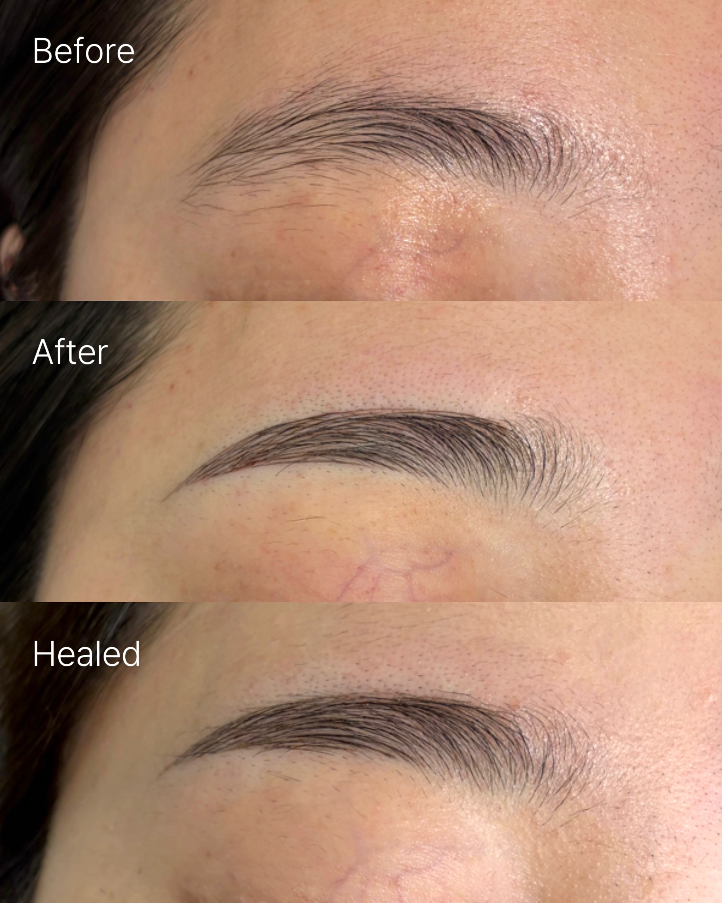
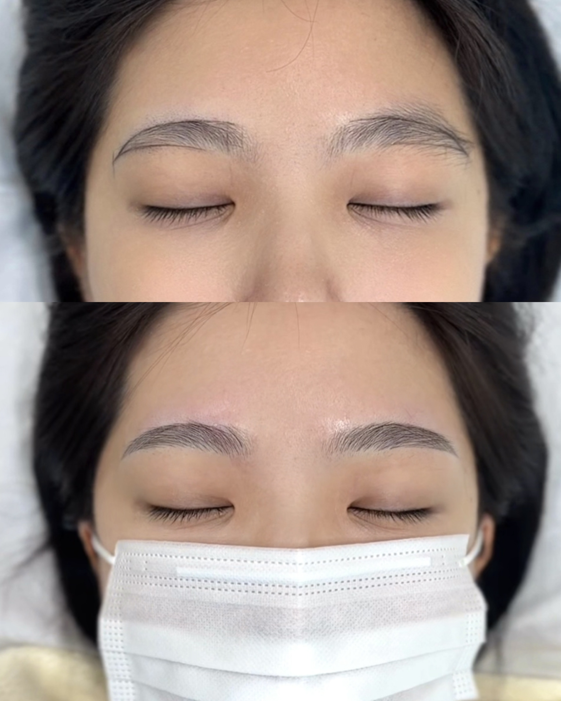
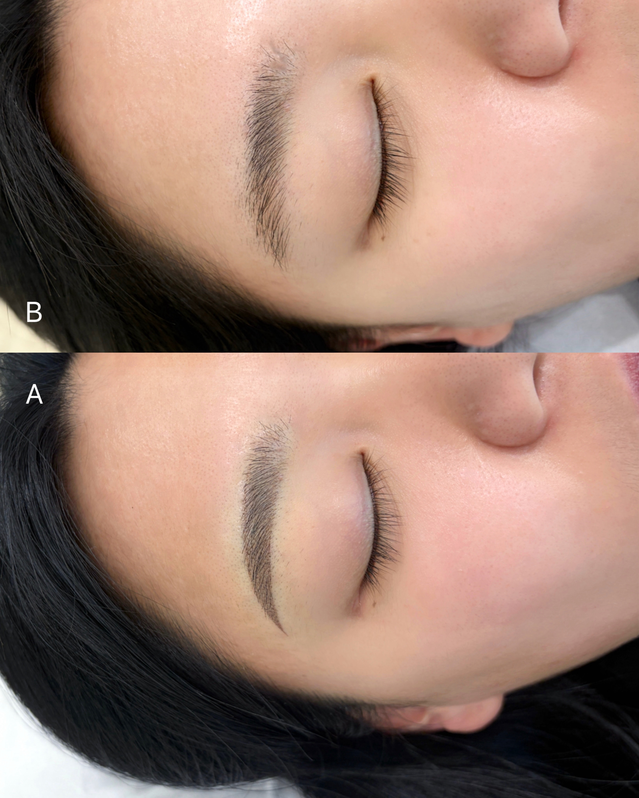
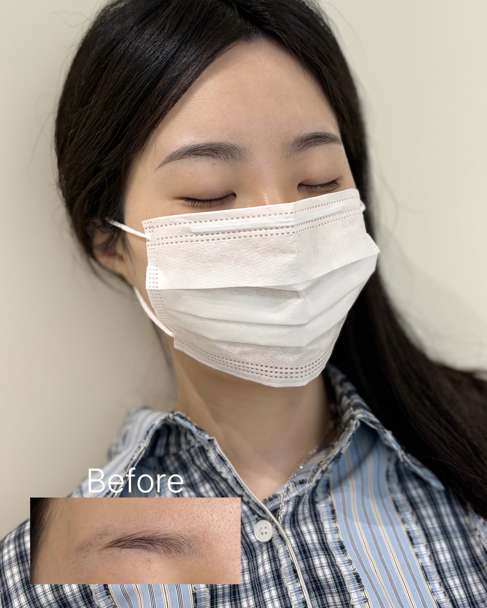

01 / WOMEN
여성 사례
앞머리와 눈썹산, 꼬리의 흐름을 얼굴 인상에 맞춰 조율한 자연눈썹 사례입니다.
03 / PORTFOLIO
사진 한 장의 인상보다 실제 얼굴에서 어울리는 흐름을 중요하게 봅니다. 아래 사례는 디자인 방향을 이해하기 위한 참고 자료입니다.
청주눈썹문신

앞머리와 눈썹산, 꼬리의 흐름을 얼굴 인상에 맞춰 조율한 자연눈썹 사례입니다.

기존 모량과 골격을 살펴 선명하지만 과하게 다듬은 느낌이 남지 않도록 상담합니다.

자연눈썹, 콤보눈썹, 섀도우눈썹은 피부와 모량, 원하는 인상에 따라 표현 방향이 달라질 수 있습니다.

시술 직후의 변화뿐 아니라 탈각 후의 흐름까지 고려해 상담 방향을 안내합니다.
모든 결과는 피부 타입, 기존 모량, 잔흔, 생활 습관에 따라 개인차가 있습니다.